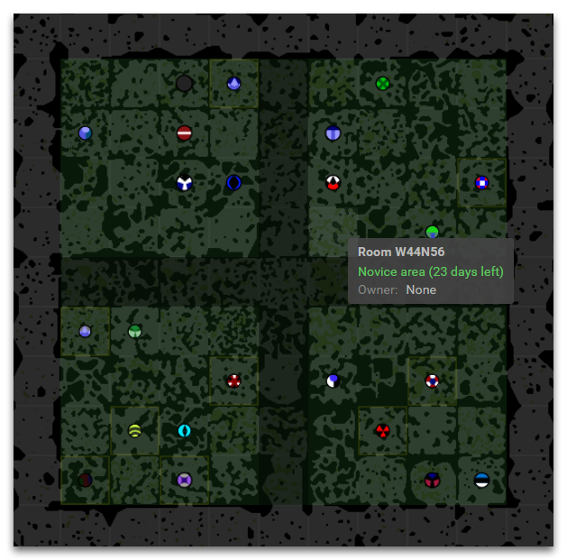
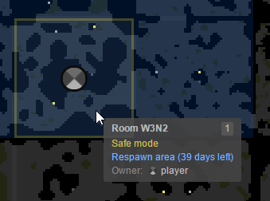
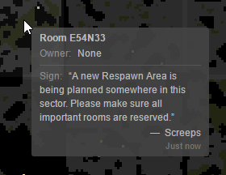

Novice Areas
To allow each player start out in the game and develop a colony without facing veterans of the Screeps world, we’ve devised a system of special temporary sectors for novice players. They are marked in green, and the “Novice Area” label pops up as you hover the mouse pointer over them.

The following rules are in force in these rooms:
- The sector is completely separated from the outer world with a blind, indestructible wall preventing outside players from entering it. Getting inside a Novice Area is possible only by placing there your initial spawn directly.
- Only players with GCL 3 or lower is allowed to start playing in these rooms.
- Each player is allowed to claim not more than 3 rooms. But the room reservation is unlimited.
- No cooldown between safe mode activations.
- It’s prohibited to build and use Nukers.
Novice Areas have the day counter. After it runs out, the walls disappear, rooms lose the green mark, all the limitations are cancelled, and the sector becomes a regular part of the world. After zones are opened, residents can start outward expansion, but can also face invasion into their sectors.
The majority of novice sectors are divided into 4x4 room size quarters. Apart from the common outer wall that encircles the entire 10x10 sector, there are also inside walls that intersect these “quarters.” The counters of those walls are lower than the total Novice Area counter. It means that each resident starts out in the game by facing other players only in his own “quarter” first, but after a few days he can meet all the residents of the sector.
Respawn Areas
Another similar kind of isolated world map zones is Respawn Areas. They are highlighted with blue color and have only the Nukers usage restriction. All players with any GCL can place their first spawn in this area and claim as many rooms as their GCL allows.

Areas generation in inner sectors
We keep monitoring the Novice and Respawn Areas population progress and open new areas as it becomes necessary. Please mind that such areas can be allocated in previously opened sectors of the common world provided they are sufficiently big, not populated, and not in use by anyone.
If you don’t want some rooms to get transformed into Novice or Respawn Areas, you should take care to reserve them.
When a Novice or Respawn Area is being planned in an inner sector, all free rooms in this sector will be signed by the game with the following message:

You can use game constants SYSTEM_USERNAME, SIGN_NOVICE_AREA, and SIGN_RESPAWN_AREA to programmatically check the signs in the rooms that are important to you and reserve them if such a message detected.